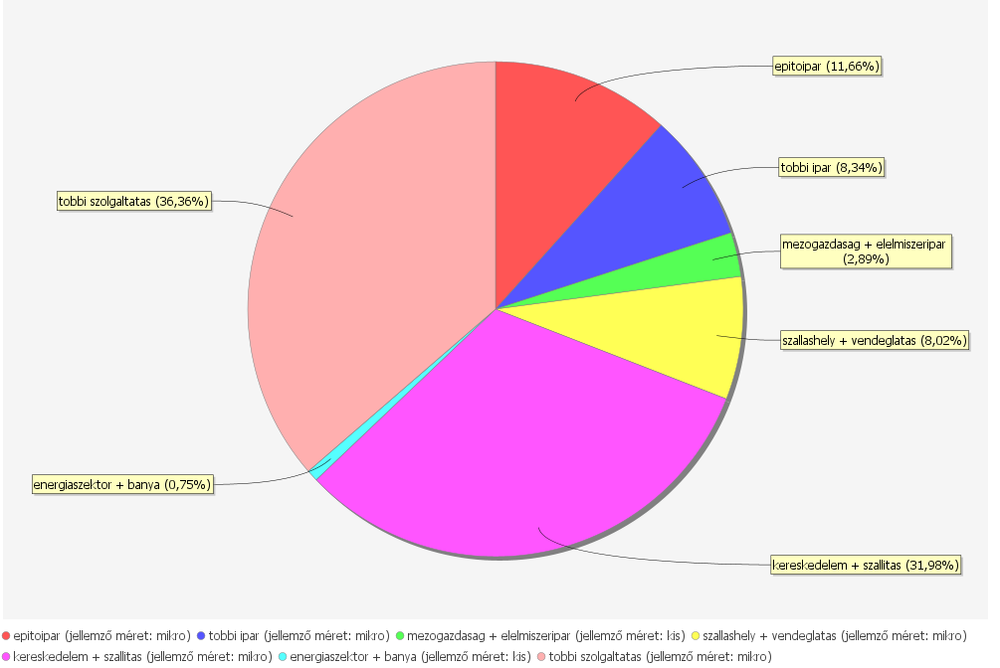
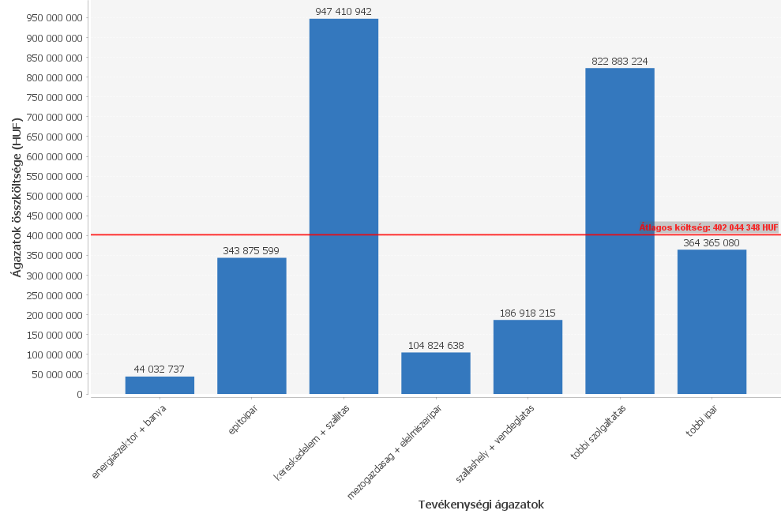
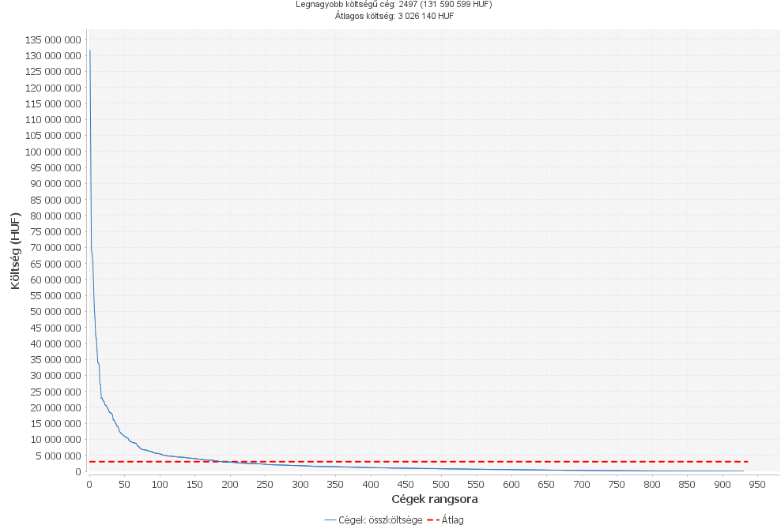
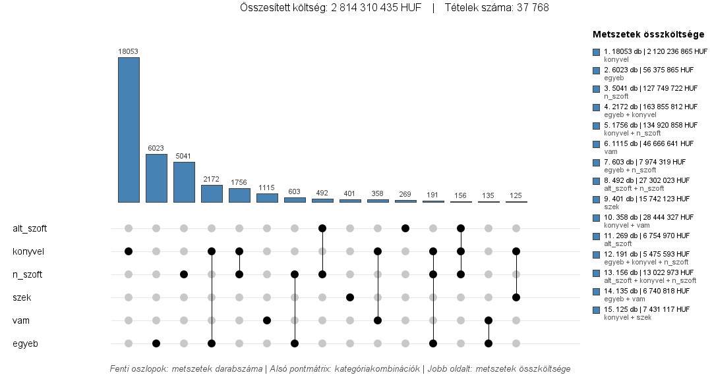

Az előfeladat keretein belül a cél a NAV adatainak feldolgozása, elemzése és eredményeinek ábrázolása, valamint a megoldás menetének bemutatása volt.
Az ábrázolandó adathalmaz két CSV formátumú forrásfájl, amelyek nagy mennyiségű adatot tartalmaznak. A fájlokból beolvasott adatokat lokális adatbázisba töltöttem fel. A feltöltött adatokat felhasználva diagrammokat, illetve elemzéshez használható JSON-kimeneteket állítottam elő. Ehhez két programot hoztam létre, a Java programozási nyelv használatával.A dokumentáció megírása során VanillaJS alapú megoldást használtam, vagyis a HTML-weboldalhoz helyi lokális CSS- és Javascript- fájlokat hoztam létre.
Beolvasás a forrásfájlokból: A fájlok adatfolyamként történő beolvasásához az InputStream osztályt használtam. A forrásfájlokból (gazdmut.csv, szamla.csv) beolvasott sorokat az adatforrás attribútumainak megfelelően Map<String, Object> típusú, strukturált objektumokká alakítottam, ahol a kulcsok az attribútumneveket, az értékek a megfelelő adatmezőket reprezentálják. A fájlból történő beolvasás végeredménye ezen összetett objektumok listája.
A beolvasás párhuzamosítása: A forrásfájlok nagy mérete miatt párhuzamosítást és feladatmegosztást alkalmaztam. A fő programszál a beolvasott sorokat egy szálak közötti adatátadó puffer-be helyezi, a többi, párhuzamos worker szál (a processzormagok számától függően) a beolvasott sorokat feldolgozza, majd a beolvasott objektumokat hozzáadja az eredménylistához.
ORM leképzés: A magas szintű adatbázisműveletek megvalósításához meghatároztam a JPA perzisztenciaegységet, és a relációs adattáblák attribútumainak és kapcsolatainak megfelelő Java entitánsmodelleket. A számlaobjektumok nem egyértelmű tételtípusa miatt a reláció felbontását alkalmaztam: külön számla és kategória modell M:N kapcsolattal.
Az objektumok feltöltése: A modellstruktúrának megfelelő feltöltést Hibernate tranzakciók keretein belül valósítottam meg, elmentve a tranzakciók eredményét. A számlák feltöltése során párhuzamosítást alkalmaztam: a számlaobjetktumokat az azonosító és processzormagok számával vett osztás maradéka alapján partíciókra bontva. A perzisztálás (mentés) során köteges módszert alkalmaztam, 1000 objektum feldolgozása során a perzisztencia kontextus felszabadításával. A számlák feltöltésénél fontos szerepet játszott a kategória attribútum, mivel már létező számlaazonosító esetén (duplikációkezelés) a program entitánsfrissítést hajt végre, új kategóriát hozzáadva az adott számlához.
Alapvető konfiguráció: Spring alapú programot hoztam létre az adatelemzési eredmények ábrázolásához. A Spring Boot projekt létrehozásánál hozzáadtam a szükséges függőséket (Spring Web, Spring Data JPA). Az előző programban meghatározott modellstruktúráját itt is felhasználtam. A Spring Data JPA automatizálta az ORM konfigurációt, illetve az adatlekérdezési metódusok megírását.
A feltöltött adatok feldolgozása: A Spring keretrenszer előnyeit felhasználva a program két adatfeldolgozási réteget tartalmaz: repository, service. A repository réteg a három entitánsosztály számára beépített implementációkat tartalmaz egyszerű adatbázislekérdezési eredmények kinyeréséhez. A service osztályok metódusai a lekérdezési eredmények felhasználásával az eredmény ábrázolásához használható értékeket vagy adatszerkezeteket állítanak elő (mivel a program célja az adatok elemzése, így nem tartalmaz tranzakciókezelést).
Az adatelemzési objektumok előkészítése: A REST architektúrát alkalmazva a controller réteg REST végpontakat biztosít, amelyek az adatelemzések JSON formátumú eredményeit szolgáltatnak. JSON eredmények előállítása során a controller metódusok további DTO osztályokat használnak fel, a szükséges adatok struktúrált megjelenítéséhez a végpontok eredményében.
Diagramok előkészítése: A REST API végpontok biztosítása mellett a controller metódusok meghívják a diagramgeneráló osztály metódusait, előállított adatforrások felhasználásával. A diagramok generálásához a JFreeChart külső könyvtárat alkalmaztam. A Swing és AWT könyvtárak segítségével a diagramterületet GUI ablakon jelenítettem meg, illetve ez alapján - pixelgrafikus úton - képfájlokat hoztam létre a diagramok tartalmával
A Vanilla JS megközelítést alkalmazva - kliens oldali keretrendszer használata nélkül - statikus HTML oldalt használtam a megoldás menetének, az adatforrás és eredmények elemzésének leírásához, stílusleíró fájl és szkriptfájl csatolásával. Az itt megjelenített, diagramokat ábrázoló képanyagokat az előző program REST végpontjainak meghívásával generáltam (azok melléktermékeként). Néhány, az adatelemzés szempontjából fontos JSON eredményt lokális JS-változóként inicializáltam, amelyek a megfelelő HTML komponenseken belül iteratív módon jelennek meg.
A kiindulási adatforrásként kapott két forrásfájl (gazdmut.csv, szamla.csv) a vételi oldalon szereplő cégek azonosítóját, tevékenységi ágazatát, méretét, illetve az adatforrásban szereplő cégek rendelési tételeinek összegét és a nyújtott szolgáltatások besorolását tartalmazzák.
A vevő oldalon szereplő cégek számláinak feltöltése során kihívást jelentett az adatelemek nagy száma, illetve bizonyos számlák többféle kategóriához tartozása (az eredeti forrásfájlban egy számla több bejegyzésben is szerepelhet, eltérő kategóriával). Az utóbbi probláma megoldásához alkalmaztam "relációfelbontást", vagyis egy adott azonosítóval rendelkező számla a létrehozott adatbázisban csak egyszer jelenhet meg, viszont több kategóriához tartozhat (külön adattáblákban szerepelnek).
A formázott, lokális adatbázisba feltöltött és elemzéshez könnyen használható adatforrás három adattáblát tartalmaz: gazdmut (a vevő oldalon szereplő cégek), szamla (a cégekhez tartozó számlák), kategoria (a számlákhoz tartozó kategóriák).
Minden cég és számla egyedi azonosítóval ellátott, a kategóriákhoz automatikusan generált kulcsattribútum tartozik. A cégek és számlák között eredendően egy-a-többhöz kapcsolat áll fent. A nem egyértelmű besorolás következtében a számlák és kategóriák adattáblái között több-a-többhöz kapcsolat van meghatározva, az elsődleges kulcspárokat tartalmazó kapcsolótáblával.
| Azonosító | Vállalat mérete | Tevékenységi ágazat | Összesített költség (HUF) |
|---|



| Tétel azonosító | Összeg | Szolgáltatások | Megrendelő cég | ||
|---|---|---|---|---|---|
| Azonosító | Tevékenységi ágazat | Vállalat mérete | |||
